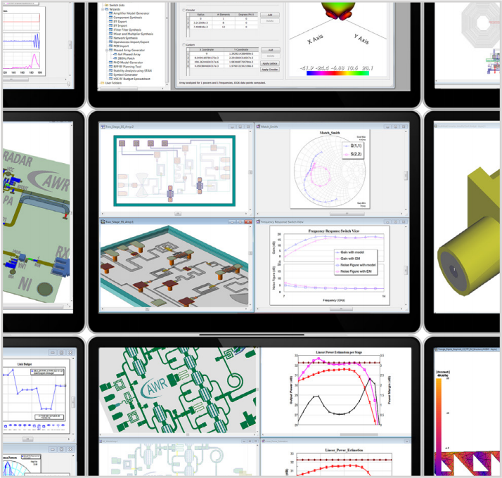
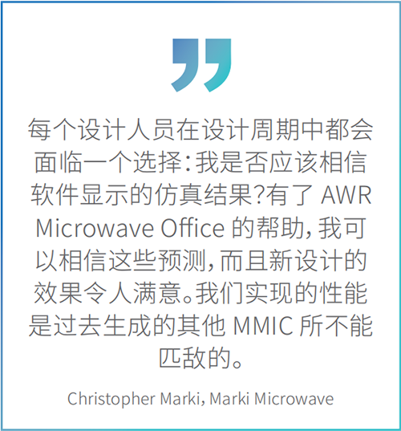
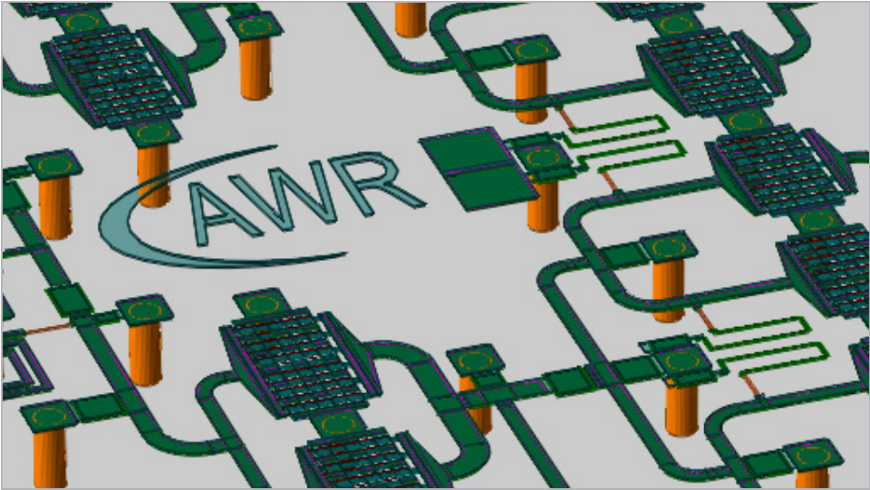
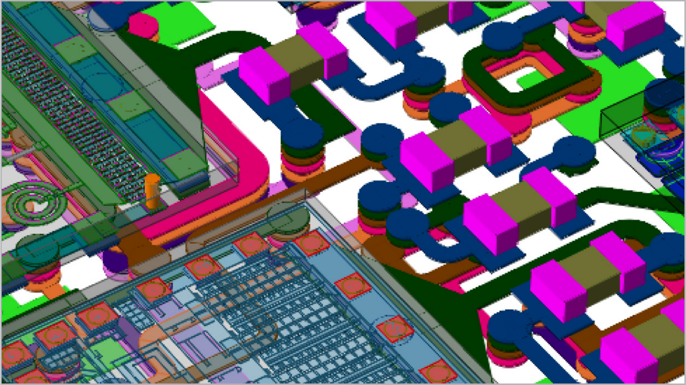
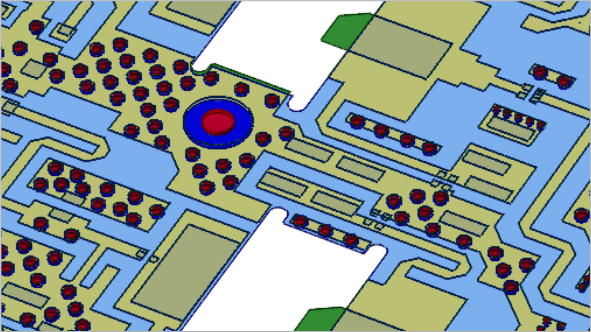

AWR Microwave Office
射频和微波电路设计软件
AWR® MicrowaveOffice® 深受领先制造商的信赖，用于加速高频电子产品的开发。该软件拥有直观的界面、创新的设计自动化和强大的谐波平衡电路仿真功能，可提高工程效率并加快设计周期。AWR Microwave Office 与 Cadence AWR Design Environment® 平台内的 Cadence AWR Visual System Simulator™ (VSS) 系统设计、Cadence AWR AXIEM® 以及 Cadence AWR Analyst™ 电磁 (EM) 仿真软件工具无缝互通，提供完整的射频和微波电路、系统和电磁协同仿真环境。
AWR 软件平台
AWR 的专有统一数据库直接链接射频感知原理图捕获和设计布局，在更短的时间内同时完成物理设计和电气仿真。强大的设计自动化和辅助工具（如滤波器、混频器、无源器件、传输线和匹配网络综合）加上用于功率放大器设计的业内领先负载牵引分析，为产品开发的各个阶段提供了关键支持。快速准确的仿真技术提供强大的电路分析功能和设计见解，得出线性/非线性时域和频域测量结果，进而正确分析高频电子器件的特性并对其进行优化。
综合资源库中包含来自领先 MMIC/RFIC 代工厂的高频分布式传输模型、表面贴装供应商组件和工艺设计套件，有助于在制造之前对设计进行精确仿真，从而减少设计迭代并加快设计速度。

产品优势
设计输入
直观的用户界面旨在为高频电路提供项目管理和设计输入，使设计人员能够利用全面的射频感知元件库快速构建网络。该元件库中包含电路、系统和电磁协同仿真、仿真控制以及标准和用户定制的射频/微波测量结果图，可为调谐/优化和分层设计的参数化提供支持。
自动化
强大的自动化功能可加快设计任务的完成进度并管理网络和测量数据，其中包括便捷的向导工具（从第三方工具导入 PCB 布局和/或 OpenAccess 示意图信息）以及易于使用的应用程序编程接口 (API) 和脚本功能，旨在支持自定义和用户定义的自动化。
负载牵引分析
用户可以根据测量或模拟数据，使用复杂的扫频负载牵引数据集轻松开发放大器的输入/输出匹配电路。性能等高线图包括可用的输出功率、增益、功率附加效率 (PAE)、双音互调失真和其他关键放大器性能指标。

仿真技术
稳健的 AWR APLAC®谐波平衡 (HB) 仿真器利用强大的多速率HB、瞬态辅助 HB 和时变（电路包络）分析，并支持大规模和高度非线性的射频/微波电路，进而提供线性和非线性电路分析。AWR AXIEM 电磁仿真器可提供所需的速度和精度，以便对无源结构、传输线、平面天线和大型（超过 100K 个未知数）贴片阵列进行特性分析和优化。 AWR Analyst 仿真器有助于加快从早期物理设计表征到完整三维电磁验证的高频产品开发流程。其三维有限元求解器可以对键合线、过孔/过孔护栏和球栅等互连结构进行快速、准确的电磁分析。
综合与设计协助
强大的综合模块和设计辅助向导加快设计启动的速度，根据用户指定的射频/微波性能标准，利用供应商资源库和代工厂授权的用于 PCB 和 MMIC 设计的 PDK 生成阻抗匹配网络。在 AWRMicrowave Office 软件中，设计人员还可进一步改进和优化合成滤波器、阻抗匹配、混频器和无源组件网络，并进行电磁验证和物理设计。
功能
亮点
► 原理图/布局 – 同步原理图/布局设计输入，并提供业内领先的调谐功能
► APLAC – 线性和非线性谐波平衡电路仿真
► 电磁分析 – 利用 AWR AXIEM 和 AWR Analyst 工具实现完全集成的电磁 (EM) 分析
► 负载牵引 – 最先进的负载牵引分析，带有谐波和视频频带调谐功能
► 稳定性 – 快速、严谨的新型环路电路包络分析，可实现多级、平衡放大器稳定性
► DRC/LVS – 设计规则检查/布局与原理图
应用和技术
MMIC
从前到后的单片微波集成电路 (MMIC) 设计流程拥有创新的用户界面，并且完全集成了设计输入、仿真和物理设计工具，可提高工程效率，并确保CMOS 代工厂使用各种砷化镓 (GaAs)、氮化镓(GaN)、硅锗 (SiGe) 一次完成对 PDK 的生产。分层框架支持对多种 MMIC、RFIC 和 PCB 工艺、多层互连、嵌入式无源器件以及多芯片射频模块中表面贴装微型设备进行仿真。

PCB
对从射频信号路径到数字控制和 DC 偏置线在内的传输介质进行精确建模，可以不断增强 PCB 的功能。电路/系统和电磁协同仿真可对表面贴装元件、互连传输线以及嵌入式和分布式无源元件进行完整的 PCB 分析以及电磁验证。集成平台支持并发的电气/物理设计以及电路/系统/电磁协同仿真，以最大程度地减少对异构点工具的依赖。借助电磁协同仿真功能实现射频感知 PCB 设计，可提高准确性，确保设计在更短时间内通过验证。

模块
多技术集成功能为许多不同技术性能进行建模，且分层框架支持对多种 MMIC、RFIC 和 PCB 工艺、多层互连、嵌入式无源器件以及多芯片射频模块中表面贴装微型设备进行仿真。设计自动化可提供用于模块实现的智能工作流程，从而加速产品开发。基于电磁的寄生提取和设计验证可提高准确性，确保设计在更短时间内通过验证。集成平台支持并发的电气/物理设计以及电路、系统和电磁协同仿真，以最大程度地减少对异构点工具的依赖。
